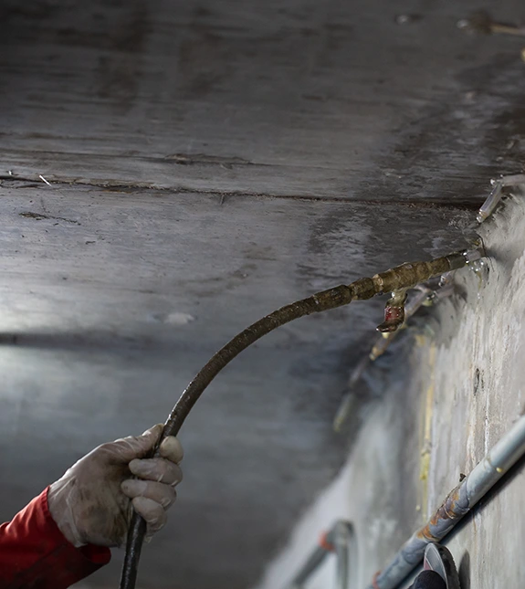

Stoppa vattnet
där det tar sig in.
Polyuretaninjektering kan täta vattenförande sprickor och fogar i betong. Vi undersöker skadan och anpassar behandlingen efter konstruktionen.
När betongen
släpper igenom vatten.
Polyuretan förs in i sprickan under kontrollerade former. Materialet reagerar och kan bilda en tät, flexibel fyllning som begränsar vatteninträngningen. Valet av produkt och metod beror på förutsättningarna.
Metoden används exempelvis i källare, garage, betongväggar och andra konstruktioner där fukt eller rinnande vatten tar sig igenom. TiB utför arbetet i Västerås och i övriga Sverige.
- Vattenförande sprickor och fogar
- Anpassning till fukt och läckage
- Avgränsade insatser i befintlig betong
- Kontroll och återställning efter behandling

Polyuretan eller epoxi?
Polyuretan används framför allt för tätning av vattenförande sprickor. Epoxi kan vara aktuellt när målet är att binda samman betongen. Vi gör bedömningen utifrån skadan och konstruktionens behov.
Sprickan och konstruktionens förutsättningar undersöks. Material och metod väljs efter skadan och eventuell vatteninträngning.
Frågor om
polyuretaninjektering.
Rätt förutsättningar gör det lättare att välja väg.
Kan jag själv avgöra vilket material som behövs?
Det är inte alltid möjligt utifrån en synlig spricka. Bland annat rörelser, vattenflöde och konstruktionens användning behöver bedömas. Vi hjälper dig med den genomgången.
Behöver hela betongytan rivas?
Injektering är ofta en riktad behandling där material förs in i sprickor och hålrum. Om ytterligare åtgärder behövs går vi igenom dem före arbetets start.